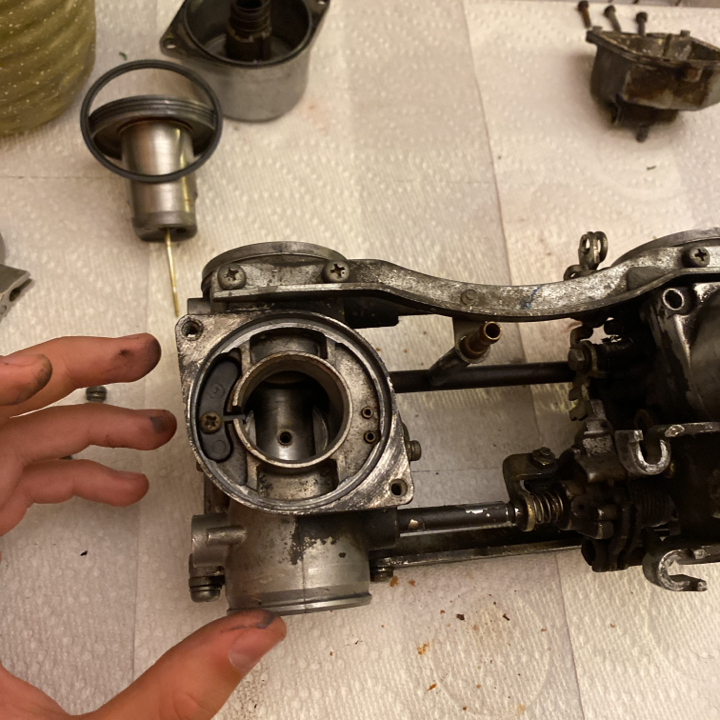
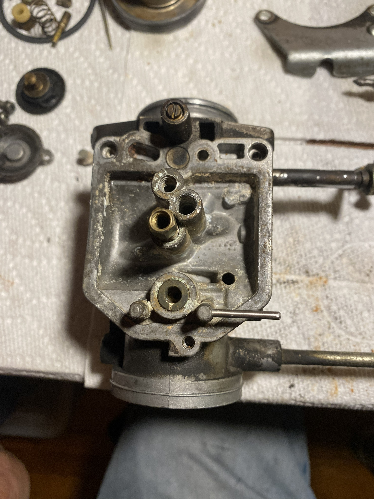
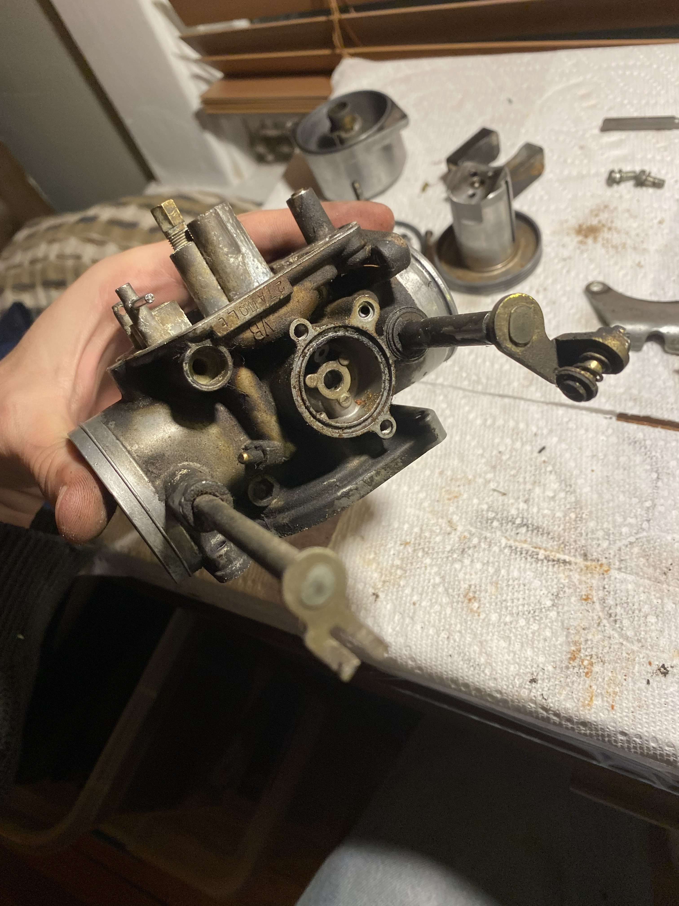
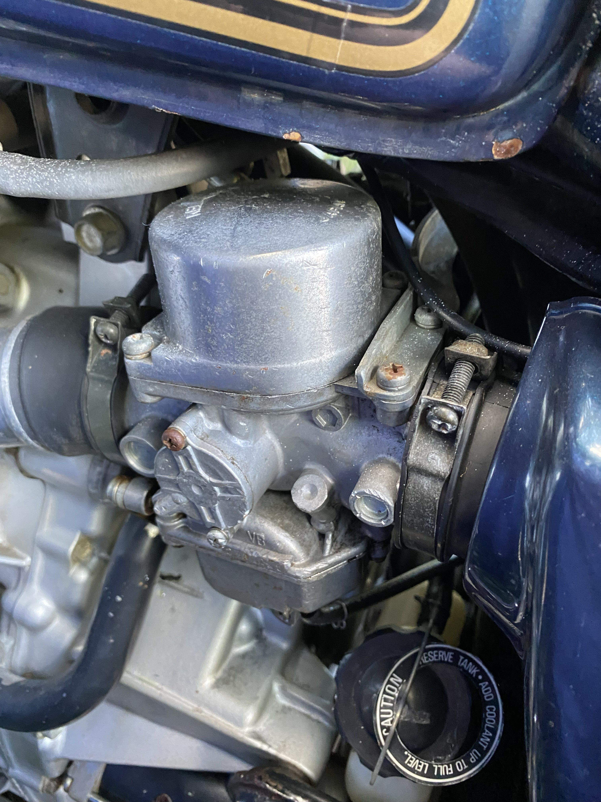

Honda CX500
The past few months I have been rebuilding a 1979 Honda CX500 V-Twin Motorcycle. This is a work in progress that thus far has challenge every aspect of my mechanical engineering capabilities.
Overview
UPDATE: As of April 2026, the motorcycle is running! Before it is fully rideable, I have to replace the front forks and the breaks, but this will be happeneing soon!
I purchased this bike in August of 2025 and have been steadily working on it during breaks from school or when there a nice enough day in Ithaca New York - unfortunately this has been rarer than I had hoped. When I purchased the bike, the starter would kick, but the engine would not turn. It had been sitting for 12 years in a garage since beeing purchased from the original owner with 60,000 miles on the dash. I have found time to work on it in the parking lot behind my apartment, keeping myseld and the bike sheilded from Ithaca snow with a tarp strung between two pine trees and a fence.
Once I did some refurbishment of the wiring and replaced the battery, I was able to get the motor to turn over, but this brought to light the various issues with the dual carburators. After giving both carbs extensive care, I was able to get the engine to run decently smoothly. I have since replaced all the gaskets and pins in the carbs, which have improved the engine run quality tons. My next steps are to get the carbs professionally tuned as I replace the front forks as well as the break disks.
Details
Role: Design, Mechanical Refurbishment, Carburator Refurbishment
Tools: Metal Work, Welding, Carburator Tooling, Engine TOoling
Context: Personal Project
Gallery



